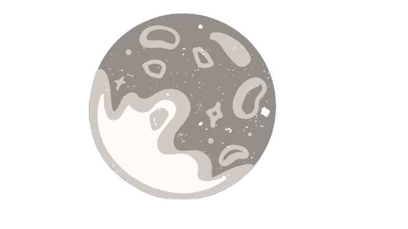

EXPLORA |
||
LOS MISTERIOS DEL ESPACIO |
||
Sumérgete en el fascinante mundo de la astronomía y descubre todas las teorías y rarezas del espacio. En nuestro sitio web, encontrarás artículos, videos y recursos educativos para satisfacer tu curiosidad sobre el universo. Únete a nuestra comunidad de amantes del cosmos y comparte tu pasión por la exploración del espacio. |
||
 |